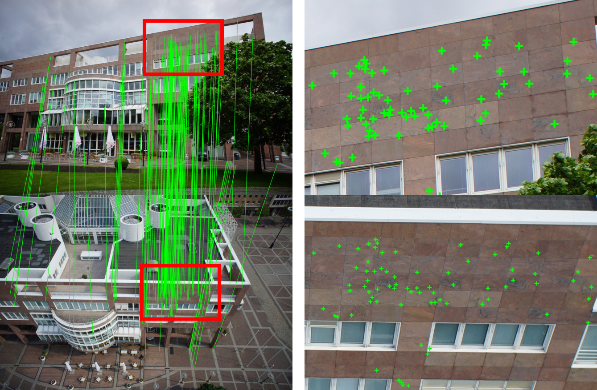
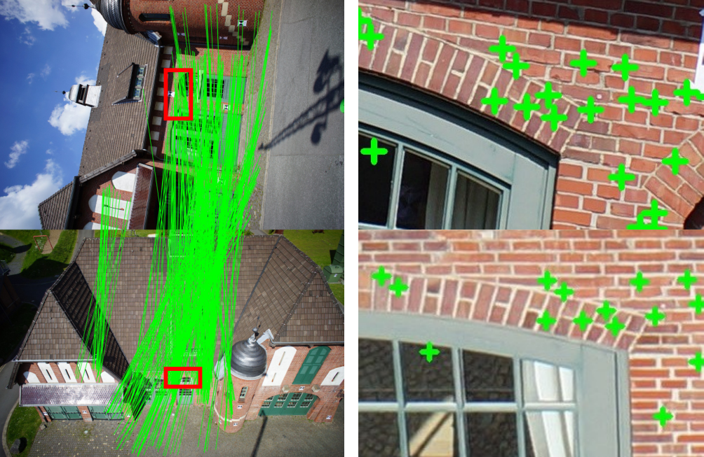
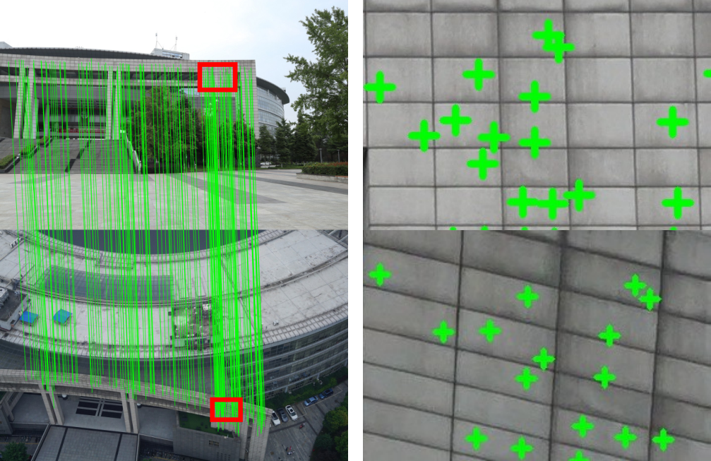
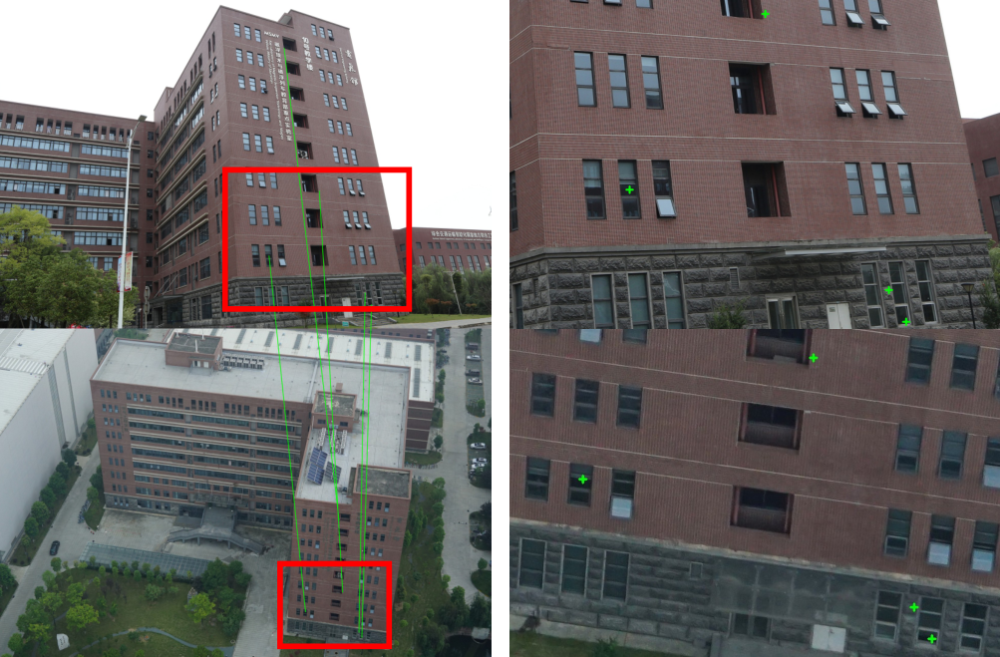
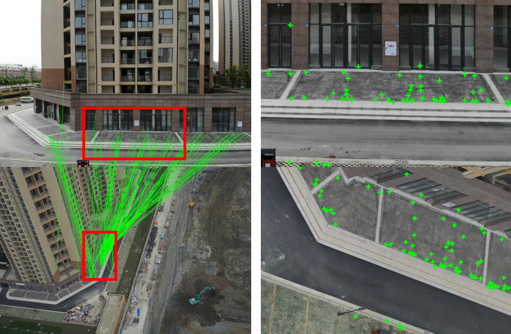

Integration of aerial and ground images has been proved as an efficient approach to enhance the surface reconstruction in urban environments. However, as the first step, the feature point matching between aerial and ground images is remarkably difficult, due to the large differences in viewpoint and illumination conditions. Previous studies based on geometry-aware image rectification have alleviated this problem, but the performance and convenience of this strategy are still limited by several flaws, e.g. quadratic image pairs, segregated extraction of descriptors and occlusions. To address these problems, we propose a novel approach: leveraging photogrammetric mesh models for aerial-ground image matching. The methods have linear time complexity with regard to the number of images. It explicitly handles low overlap using multi-view images. The proposed methods can be directly injected into off-the-shelf structure-from-motion (SFM) and multi-view stereo (MVS) solutions. First, aerial and ground images are reconstructed separately and initially co-registered through weak georeferencing data. Second, aerial models are rendered to the initial ground views, in which color, depth and normal images are obtained. Then, feature matching between synthesized and ground images are conducted through descriptor searching and geometry-constrained outlier removal. Finally, oriented 3D patches are formulated using the synthesized depth and normal images and the correspondences are propagated to the aerial views through patch-based matching. Experimental evaluations using five datasets reveal satisfactory performance of the proposed methods in aerial-ground image matching, which succeeds in all of the ten challenging pairs compared to only three for the second best. In addition, incorporation of existing SFM and MVS solutions enables more complete reconstruction results, with better internal stability.
Centre, Dortmund
Zeche, Zurich
Library, SWJTU
Building, SWJTU
Residential, SWJTU
We release all the images, initial AT (Aerial Triangulation) Files and the Tiled 3D models.
The authors gratefully acknowledge the provision of the datasets by ISPRS and EuroSDR, which were released in conjunction with the ISPRS Scientific Initiatives 2014 and 2015, led by ISPRS ICWG I/Vb. In addition, this work was supported by the National Natural Science Foundation of China (Projects No.: 41631174, 41871291, 41871314).